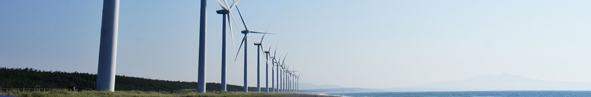

> ESG경영 > 준법경영
준법경영
제반 법규를 준수하는 준법경영
경영진의 확고한 준법의지를 바탕으로 준법경영의 가치를 중요시하는 조직문화를 정착시키고자 합니다.
준법경영 이념 및 체계
눈앞의 이익을 위해 법과 원칙을 외면하는 것은
자신과 회사의 미래를 포기하는 것
삼성중공업은 경영활동 수행 과정에서 나타날 수 있는 위법 가능성을 선제적으로 차단하기 위해 준법경영 추진 체계를 구축하였습니다. 경영진의 확고한 준법의지를 토대로 체계적으로 구축한 준법 프로그램을 실무 업무와 결합하여 준법경영을 기업문화로 정착시키고자 합니다.

- 첫째,
준법경영의 중요성을 이해하고 회사 업무를 수행함에 있어 국내외 법규와 회사 규정을 성실히 준수한다. - 둘째,
잘못된 관행과 부정한 유혹에 타협하지 않으며, 위법행위에 참여하거나 묵인하지 않는다. - 셋째,
회사의 준법경영 활동에 적극 참여하며 준법문화 구축에 앞장선다.
준법프로그램
삼성중공업의 준법프로그램은 체계적이고 효과적인 준법 통제를 위해 사전예방-모니터링-사후관리의 순환프로세스로 운영되고 있습니다. 이를 통해 부패방지, 공정거래 등 사업영역과 관련된 법위반리스크를 사전에 파악하고 효율적으로 관리하고 있습니다. 또한 준법프로그램운영 중 보완이 필요한 사항이 발견되면 즉시 개선하고 있습니다.
-
- 사전예방
- 사전예방회사의 경영활동이나 임직원의 업무 중 법위반가능성을 사전에 방지하기 위한 활동
-
- 모니터링
- 모니터링 업무 중 발생가능성이 있는 위법 또는 회사의 준법규정 위반사항을 지속적으로 탐지하기 위한 활동
-
- 사후관리
- 모니터링 결과를 바탕으로 위법사항을 시정하고 준법프로그램을 보완·개선하기 위한 활동